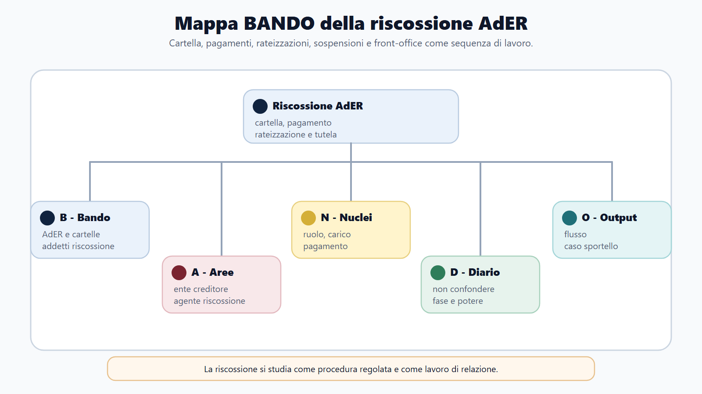
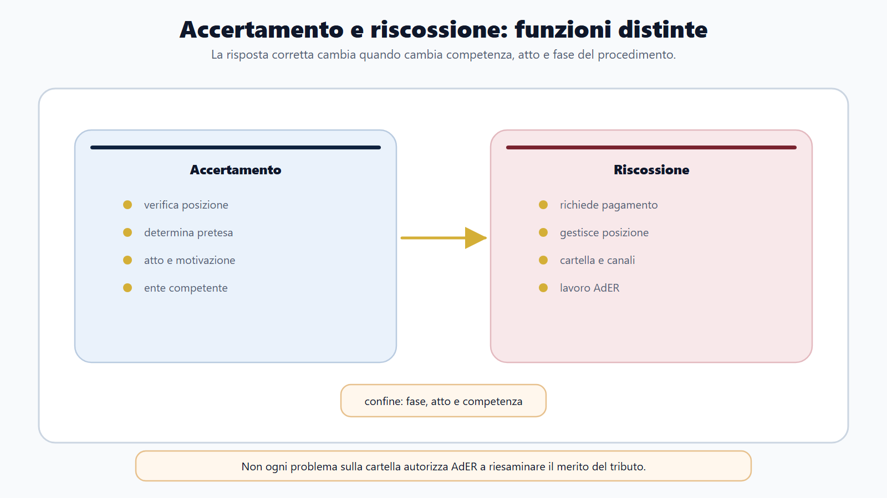
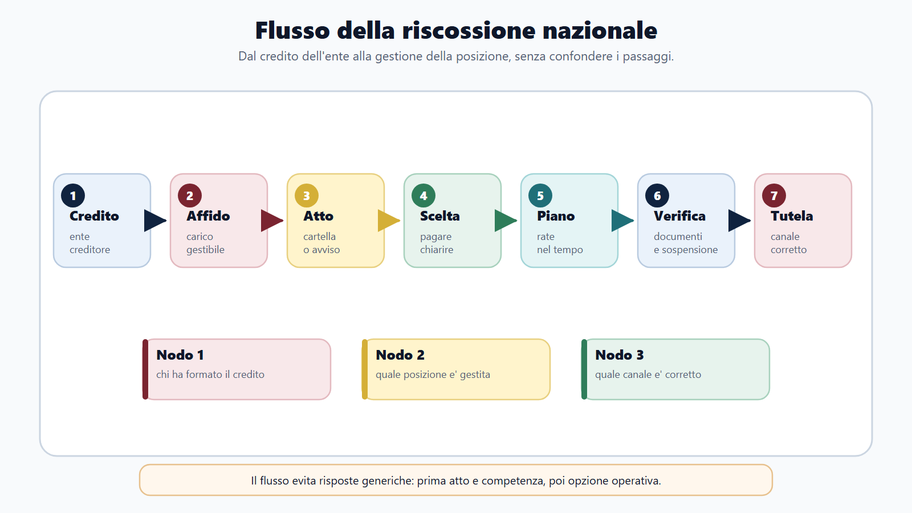
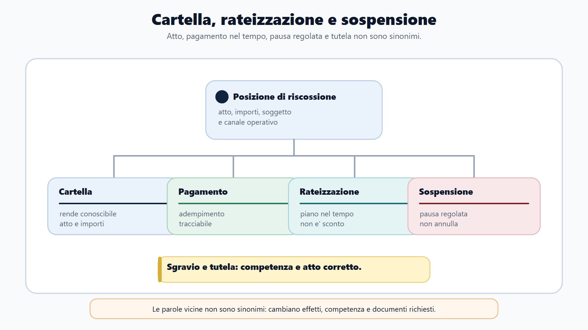
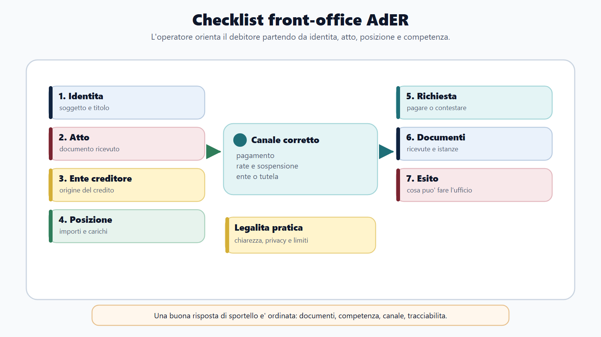

VOL-03 · Capitolo 24
M-FC02
Riscossione nazionale
e lavoro in AdER
La riscossione comincia quando un credito pubblico deve essere incassato, ma non coincide con la decisione che quel credito esiste. L’ente creditore accerta o liquida la somma; Agenzia delle entrate-Riscossione gestisce gli atti e i servizi che conducono al pagamento e, se necessario, al recupero coattivo.
01 · Il problema in prova
Classificare la richiesta prima di rispondere
Il cittadino può contestare il merito del tributo, chiedere una rateizzazione, documentare un pagamento già eseguito, domandare la sospensione o chiedere chiarimenti. Sono situazioni diverse, con competenze, termini ed effetti diversi.
Che cos’è AdER
Ente pubblico economico istituito dall’art. 1 del D.L. 193/2016, convertito dalla L. 225/2016. Svolge le funzioni relative alla riscossione nazionale, con indirizzo operativo e controllo dell’Agenzia delle Entrate. Non è una direzione interna di AE né un’agenzia del D.Lgs. 300/1999 nello stesso senso di AE e ADM.
A che serve in prova
A non promettere ciò che l’ente non può concedere e a non respingere una richiesta solo perché è imprecisa. Ricostruire il carico, identificare l’ente creditore, verificare lo stato, informare e registrare. Dietro una cartella può esserci un tributo erariale, un’entrata locale o una sanzione.
L’accertamento forma o verifica la pretesa; la riscossione la porta a pagamento.
Se il debitore sostiene che l’imposta è calcolata male, il problema riguarda di regola l’ente titolare del credito. Se chiede come pagare o dilazionare, l’interlocutore è AdER. Una richiesta può contenere entrambe le questioni: l’addetto le scompone.
02 · BANDO
Cinque decisioni su questo capitolo
Cerca nel programma riscossione mediante ruolo, D.P.R. 602/1973, AdER, cartella, rateizzazione, sospensione e procedure cautelari o esecutive.
| Che cosa fai | Se la salti | |
|---|---|---|
| B — Bando | Segna richiami a ruolo, cartella, AdER, dilazione, sospensione, fermo, ipoteca, pignoramento. | Studi un elenco di moduli senza funzione. |
| A — Aree | Collega tributario, procedimento, servizi digitali, dati personali, utenza. | Tratti AdER come un ufficio impositivo. |
| N — Nuclei | Ente creditore, ruolo, carico, cartella, accertamento esecutivo, pagamento, dilazione, sgravio. | Confondi chi decide sul tributo e chi riscuote. |
| D — Diario | Registra errori di competenza: chi sospende, chi annulla, chi rateizza. | Ripeti le trappole allo sportello e all’orale. |
| O — Output | Flusso della riscossione e risposta orale di due minuti su una cartella contestata. | Elenco di atti senza sequenza. |
03 · Mappa
Credito, titolo, carico, servizio
La mappa tiene insieme ente creditore, titolo, affidamento, pagamento e tutela. Serve a non partire dalla cifra stampata sulla cartella.

Prima domanda: chi è l’ente creditore e quale atto ha ricevuto l’utente?
04 · Competenza
Accertamento e riscossione restano distinti
L’accertamento determina, nei casi previsti, esistenza e misura dell’obbligazione. La riscossione mira all’incasso di una somma affidata secondo un titolo previsto dalla legge. Le due fasi possono susseguirsi, ma non sono intercambiabili.
| Questione | Competenza normale |
|---|---|
| Fondatezza e misura del tributo | Ente creditore |
| Modalità di pagamento | AdER |
| Rateizzazione | AdER, quando la legge le attribuisce il potere |
| Sgravio del credito | Ente creditore |
| Sospensione legale | AdER riceve e trasmette; l’ente verifica |

05 · Percorso ordinario
Ruolo, cartella, pagamento
L’ente creditore forma il ruolo: elenco di debitori e somme, reso esecutivo e consegnato all’agente. AdER prende in carico, elabora la cartella e la notifica. La cartella non crea dal nulla il credito: comunica le somme iscritte e invita a pagare.

Dopo la notifica: pagamento, rateizzazione, sospensione nei casi previsti o tutela. Niente misura automatica e indiscriminata.
06 · Due flussi
Cartella e accertamento esecutivo
Non tutti i crediti passano attraverso una cartella. Per gli atti ai quali la legge attribuisce efficacia esecutiva, l’avviso contiene già l’intimazione a pagare e diventa titolo per la riscossione dopo i passaggi previsti. L’ente affida il carico ad AdER senza una successiva iscrizione a ruolo seguita da cartella.
Avviso di presa in carico
Informa il debitore che AdER ha ricevuto il carico. Non è un nuovo accertamento e non sostituisce l’atto originario. All’orale: due percorsi di formazione della pretesa esecutiva, non due atti consecutivi necessari per lo stesso credito.
Al front-office
Prima domanda: quale atto ha ricevuto l’utente? Leggere solo la parola «Agenzia» o l’importo porta a informazioni sul procedimento sbagliato. Il pagamento chiude o riduce la posizione per la parte versata; AdER riversa agli enti creditori.
Quando il debitore ha più carichi, prima di dare indicazioni si verificano identificativo dell’atto, posizione, importo aggiornato ed eventuale piano in corso.
07 · Istituti
Rateizzare non è sgravare
La rateizzazione distribuisce il pagamento quando ricorrono i presupposti. Non annulla il carico e non equivale a uno sgravio. L’art. 19 del D.P.R. 602/1973 è la disposizione centrale. Il D.Lgs. 110/2024 ha modificato requisiti e durata dei piani.
Soglie, numero di rate e cause di decadenza si verificano alla data del bando. Per le richieste 2025-2026 il wiki fissa, su semplice richiesta con dichiarazione di temporanea difficoltà, dilazioni fino a 84 rate mensili per debiti fino a 120.000 euro compresi in ciascuna domanda. Piani più lunghi o importi superiori richiedono documentazione. Aggiornare sul portale AdER e sul testo vigente.
Sospensione arresta; sgravio elimina il carico; ricorso chiede al giudice. Non sono sinonimi.

08 · Sospensione
AdER riceve, l’ente creditore verifica
La sospensione legale, disciplinata dalla L. 228/2012, può essere chiesta ad AdER entro sessanta giorni dalla notifica, nei casi tassativi: pagamento prima del ruolo, sgravio già disposto, prescrizione o decadenza anteriori all’esecutività, sospensione amministrativa o giudiziale, sentenza di annullamento in un giudizio cui l’agente non ha partecipato.
Dichiarazione
AdER riceve, sospende nei limiti previsti e trasmette all’ente creditore.
Verifica
L’ente titolare valuta il fondamento. AdER non decide se il tributo originario fosse dovuto.
Esito
Sgravio se il credito cade; ripresa se la richiesta è respinta. Il ricorso non sospende sempre da solo.
La sospensione amministrativa deriva da un provvedimento dell’ente creditore; quella giudiziale da una decisione dell’autorità competente. Occorre il titolo giuridico della sospensione, non una domanda di aiuto.
09 · Recupero
Cautela ed esecuzione non coincidono
Le misure cautelari proteggono la possibilità di riscossione. Le procedure esecutive soddisfano il credito sul patrimonio. Non ogni atto di AdER apre subito l’esecuzione. Prima: notifica, termini, importi, sospensioni, rateazioni.
| Istituto | Funzione pratica | Errore da evitare |
|---|---|---|
| Fermo amministrativo | Impedisce la libera disponibilità del veicolo fino alla regolarizzazione. | Pensare che coincida sempre con il pignoramento. |
| Ipoteca | Rafforza la garanzia sul bene immobile secondo i presupposti. | Confonderla con la vendita forzata. |
| Pignoramento | Avvia la fase esecutiva su beni o crediti del debitore. | Trattarlo come semplice sollecito. |
Un preavviso sul veicolo e una domanda di rateizzazione appena presentata. Non «non può più succedere nulla»: si verifica stato della richiesta, posizione del carico, effetti sospensivi e disciplina applicabile. Poi si chiarisce se il cautelare prosegue, è sospeso o va rielaborato.
10 · Lavoro AdER
Front-office e back-office
Nel front-office l’operatore identifica l’utente, acquisisce la richiesta, consulta la posizione nei limiti dell’autorizzazione e indirizza verso il servizio corretto. Non svolge consulenza privata e non anticipa l’esito di istanze che richiedono istruttoria. Il rapporto di lavoro non va confuso con quello dei dipendenti ministeriali: fanno fede avviso, regolamento di selezione e CCNL indicato.
Back-office
Ricostruisce carichi, notifiche, pagamenti e provvedimenti; tratta istanze; comunica con enti creditori; conserva la documentazione. Una data errata o un documento associato alla posizione sbagliata può incidere su termini, procedure e diritti.
Competenze ricorrenti
Lettura giuridica dell’atto e della fase; uso delle banche dati; comunicazione anche in conflitto; riservatezza e dati necessari; tracciatura; distinzione tra informazione, istruttoria e decisione.
11 · Caso guidato
Cartella per una somma già pagata
Una cittadina presenta una cartella relativa a una sanzione comunale e mostra una ricevuta anteriore alla formazione del ruolo. Chiede di «cancellare subito la multa».
| Passaggio | Ragionamento |
|---|---|
| Classificazione | La documentazione indica uno dei casi che possono fondare la sospensione legale. |
| Competenza | AdER non annulla autonomamente il credito del Comune. Può ricevere la dichiarazione e trasmetterla. |
| Istruttoria | Identità, atto, data di notifica, riferibilità della ricevuta, completezza del modulo. |
| Effetto | La riscossione è sospesa mentre il Comune verifica. Se riconosce il pagamento, dispone lo sgravio. |
| Comunicazione | Sospensione e cancellazione sono diverse. Non si promette l’annullamento; si indica il procedimento e si conserva la prova. |
12 · Verifica
Due domande da saper spiegare
Funzione della cartella e rapporto ente creditore–AdER
Definire ruolo e cartella; precisare che il ruolo è formato dall’ente creditore; descrivere notifica, pagamento e servizi gestiti da AdER; distinguere contestazione del merito, sgravio e strumenti propri della riscossione; chiudere con il percorso alternativo dell’accertamento esecutivo.
AdER può ridurre il tributo in autotutela?
No, non in via generale. AdER gestisce la riscossione. La correzione del fondamento o dell’ammontare spetta normalmente all’ente creditore, che può emettere lo sgravio. Vanno distinti vizi dell’attività di riscossione e vizi dell’atto presupposto. Una domanda di informazioni non blocca da sola la procedura.
13 · Mini-esercizio
Soggetto, strumento, primo controllo
| Situazione | Chi e che cosa |
|---|---|
| Il debitore chiede di pagare in 72 rate | AdER: domanda di rateizzazione; importo, regime temporale, carichi, requisiti. |
| L’ente ha già emesso uno sgravio | Ente e AdER: allineamento; autenticità, riferibilità, stato del carico. |
| L’imposta è stata calcolata male | Ente creditore o giudice: atto originario e termini. |
| Un delegato chiede l’estratto di un familiare | AdER: identità, delega e poteri del richiedente. |
| Avviso di presa in carico e pretesa della cartella | Spiegare l’accertamento esecutivo; verificare atto presupposto e affidamento. |
14 · Checklist sportello
Otto passaggi prima di rispondere
Se il cittadino è davanti all’ufficio sbagliato, deve capire perché e a chi rivolgersi. Se manca un documento, deve sapere quale funzione svolge.

Identità, atto, ente creditore, posizione, competenza, canale e tracciabilità: poi la risposta.
15 · Da tenere ferme
Cinque regole, con il perché
1. L’ente creditore determina il credito; AdER ne cura la riscossione.
2. Nel percorso a ruolo, AdER elabora e notifica la cartella dopo la consegna del ruolo.
3. L’accertamento esecutivo non richiede una successiva cartella per lo stesso carico.
4. Rateizzazione, sospensione, sgravio e ricorso hanno presupposti ed effetti diversi.
5. Nel lavoro AdER, classificare correttamente la richiesta viene prima della risposta.
16 · Anti-confusione
Cinque formule da tenere in tasca
| Confusione | Formula corretta |
|---|---|
| Riscossione = accertamento | L’accertamento forma o verifica la pretesa; la riscossione la porta a pagamento. |
| Cartella = debito sostanziale | La cartella comunica e gestisce una posizione iscritta a ruolo. |
| Rateizzazione = sconto | Distribuisce il pagamento secondo le regole vigenti. |
| Sospensione = annullamento | Arresta la procedura; non elimina automaticamente il credito. |
| Sportello = giudice o ente creditore | Informa, gestisce le procedure di competenza e indirizza. |
Prossimo capitolo
Dogane e procedure doganali ADM
Il credito affidato è distinto dall’accertamento. Il capitolo successivo cambia oggetto: merce, tariffa, origine, valore, regime. Prima di calcolare il dazio si identifica che cosa è la merce.